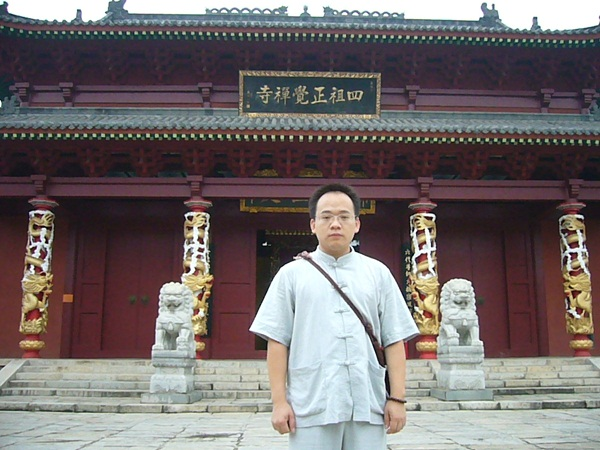
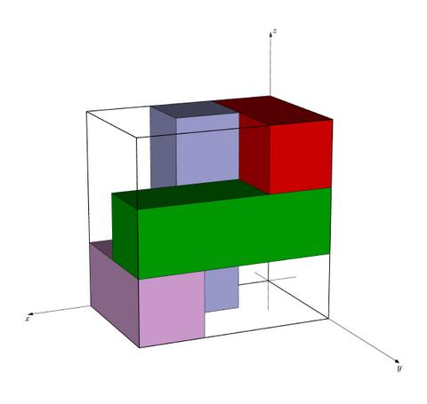
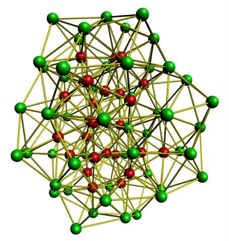
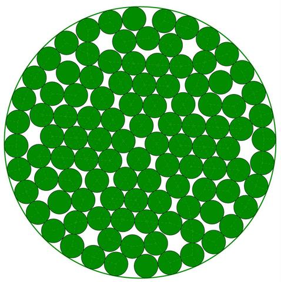

Tao Ye 叶涛
School of Computer Science and Technology,
Huazhong University of Science and Technology,
Wuhan, 430074, China
Mobile: 86 133 499 166 97
Email: yeetao@gmail.com
|
 |
Research Interests
Area: NP hard, combinatorial optimization, global optimization
Problem: circle packing, geometry optimization, satisfiability problem, bin packing, graph coloring, task scheduling, timetabling, traffic grooming, network planning
Method: heuristic, metaheuristic, tabu search, simulated annealing, memetic algorithm, adaptive memory
algorithm, quantum annealing, basin hopping, population basin hopping
Education
2008-2012, PhD Candidate, Huazhong University of Science and Technology
- Expected: July, 2012
- Advisor: Professor Wenqi Huang
- Award: Innovation Fund for Outstanding Doctoral Dissertation (2011, top 1%)
2006-2008, Master, Huazhong University of Science and Technology
- GPA: 87/100 (top 5%)
- Award: Outstanding Graudate Student Award (2007, top 5%)
2002-2006, Bachelor, Huazhong University of Science and Technology
- GPA: 87/100 (top 5%)
- Award: Graduate with Honors (2006, top 5%), First Class of National Scholarship (2004, top 1%), Outstanding Student Award (2003, top 5%), First Class Scholarship (2003, 2005, top 10%)
Research Experience
|
ROADEF/EURO challenge 2012: machine reassignment problem
This is a challenge match organized by Google and ROADEF/EURO in 2011 . We proposed a
heuristic algorithm which can effectively solve this problem. We have already passed the qualification stage and currently ranked the 9-th among 82 teams from all over the world (see
http://challenge.roadef.org/2012/en/qualif.php).
|
|
Traffic grooming in optical WDM mesh networks
This is a complicated planning problem in telecommunications, finding a better solution can save a
lot of money. We proposed an algorithm which can be applicable to various real world scenarios. On
many large instances, it finds better solutions than the top-performance algorithms in industry.
|
|
Bottom-left placement theorem for the rectangle packing problem
This is a classic NP-hard problem with broad range of applications. We proved a bottom-left placement theorem, showing that if only there exist feasible solutions, then we can achieve one using the bottom-left placement heuristic. This theorem lays a solid foundation for many algorithms based on the bottom-left placement heuristic (see http://arxiv.org/abs/1107.4463)
|

|
|
Structure optimization of binary Lennard-Jones clusters
This is a challenging problem in computational chemistry, involving both continuous and combinatorial
optimization. We proposed a new fast algorithm and found 12 better solutions than the previously
best-known ones. By far, our solutions are still the best-known records reported on the Cambridge
Cluster Database: http://www-wales.ch.cam.ac.uk/CCD.html.
|

|
|
Global optimization algorithm for the circle packing problem
This is a well-known challenge in geometry, and has been widely studied by many researchers using
various methods. We proposed a new global optimization algorithm and broken hundreds of the
previously best-known records. By far, many of our solutions are still the best-known records reported
on the Packomania website: http://www.packomania.com
|

|
Publications
published
- Wenqi Huang,Tao Ye*. Global optimization method for finding dense packings of equal circles in a circle. European Journal of Operational Research. 2011, 210, 474-481. [get from Elsevier]
- Wenqi Huang,Tao Ye*. Greedy vacancy search algorithm for packing equal circles in a square. Operations Research Letters. 2010, 38, 378-382. [get from Elsevier]
- Tao Ye*, Ruchu Xu, Wenqi Huang. Global optimization of binary Lennard-Jones clusters using three perturbation operators. Journal of Chemical Information and Modeling. 2011, 51, 572-577. [get from ACS]
- Wenqi Huang,Tao Ye*. Quasi-physical global optimization method for solving the equal circle packing problem. Science in China Series F: Information Sciences. 2011, 54, 1333-1339. [get from Springer]
submitted
- Wenqi Huang,Tao Ye* , Duanbing Chen. Bottom-Left placement theorem for rectangle packing.
- Wenqi Huang,Tao Ye* , Duanbing Chen. Corner occupying theorem for the two-dimensional integer
rectangle packing problem. Under review at: Science in China Series F: Information Sciences.
Presentations
Skills
Math: Reviewer for Mathematical Reviews (since Jan, 2012)
English: Fluent. CET-6 (took in 2004): 81/100, TOEFL (took in 2007): 97/120.
Program: Proficient. Ten years of programming experience, familiar with C/C++, data structure, MFC, VCL.
References
Professor Wenqi Huang
Address: School of Computer Science and Technology, Huazhong University of Science and Technology, Wuhan, 430074, China
Telephone: 86-27-8754-3885
Email: wqhuang@hust.edu.cn
Professor Zhipeng Lü
Address: School of Computer Science and Technology, Huazhong University of Science and Technology, Wuhan, 430074, China
Telephone: 86-27-8754-3885
Email: zhipeng.lv@hust.edu.cn zhipeng.lui@gmail.com
|